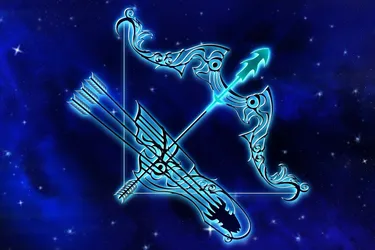

СТРІЛЕЦЬ
(23 листопада по 22 грудня)


Пристрасть до життя, щедрість і вроджений оптимізм роблять його непереможним у багатьох життєвих ситуаціях і воістину унікальною, незабутньою особистістю.
Цьому знаку Зодіаку притаманні постійне бажання вдосконалювати свої знання, навички та здатність пірнати з головою у сферу, що його цікавить. Завдяки своїй харизмі, товариськості та вмінню пристосовуватися до будь-яких ситуацій, Стрільці впевнено йдуть до своїх цілей, заводять нові знайомства і знаходять однодумців. Сидіти на місці, склавши руки, – це не про них. Але такий стрімкий ритм зростання і розвитку спостерігатиметься доти, доки представники цього сузір’я не втратять свій інтерес. Так, Стрільці дуже мінливі: у них так багато захоплень та інтересів, що зосередитися на чомусь певному надовго не виходить.
- Особливості: оптимізм,щедрість,непосидючість.
- Символізм: це останній знак вогняного елементу.
- Вплив: стрілець вірить у себе і свої сили.
- Камені-талісмани: підкова, саламандра, лук і стріли.
Пристрасть до життя, щедрість і вроджений оптимізм роблять його непереможним у багатьох життєвих ситуаціях і воістину унікальною, незабутньою особистістю.